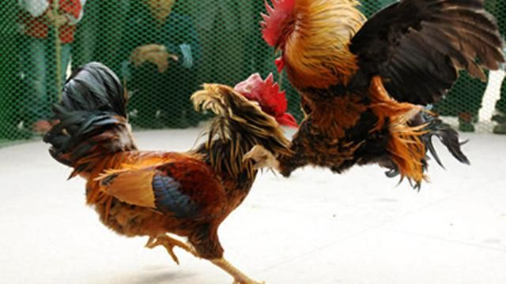
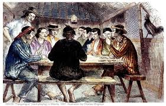
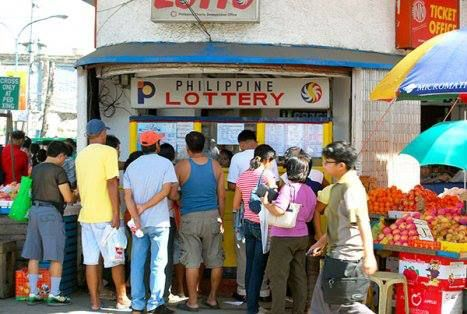
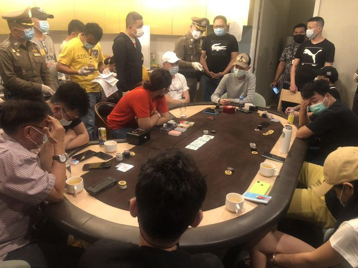
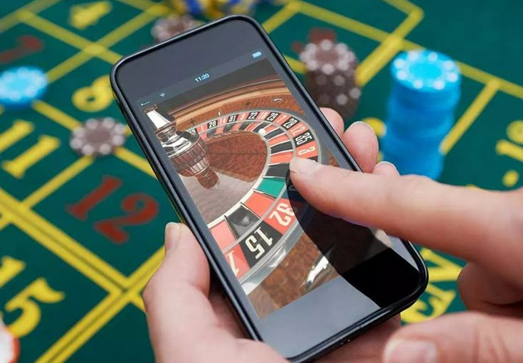

Research on the History of Gambling in the Philippines
Pre-Colonial Period (Before 1565)
Even before foreign colonisation, Filipinos had long integrated gambling as part of their culture. Sungka and Sabong (Cockfighting) being one of the prominent and influential games being played especially during celebrations and gatherings. The social culture of these gambling games can still be seen in this day and age. (Diego, 2025)

Spanish Colonial Period (1565–1898)
The gambling culture only grew stronger during the Spanish Colonial Period where cockpits, card parlours, billiard hall, and so forth emerged. Although, this is where the first signs of Gambling Addiction were seen by the Spanish colony, where men in Manila continued to gamble even when it was prohibited. By this point, gambling has become widespread among all sectors of society. It was not long before there were laws preventing gambling, one of which was the “Royal Ordinance of 1768” where gambling was punishable via lashes. However, this had little effect on preventing actual gambling (Client Challenge, n.d.).

American Colonial Period (1898–1946)
During the American Colonial Period, lotteries were officially institutionalized with the creation of the Philippine Charity Sweepstakes Office (PCSO) in 1934, which held its first draw the next year to support hospitals and education (Lucero, 2025).

Post-Independence Philippines (1946–2000s)
After independence, gambling continued to be regulated by the government. However, during martial law years of the 1970s Philippine Amusement and Gaming Corp (PAGCOR) was established with the role of running casinos and regulating games, marking gambling as an official industry (Lucero, 2025).

Modern Era (2010s–Present)
Now in the modern age, the Philippines has become one of Asia's major gambling hubs. Gambling companies are utilizing mobile app-accessible digital platforms, and other digital gambling sites to further expand their reach, resulting in 66% of young Filipinos between the ages 18 and 24 (Fides, n.d.). Illegal gambling still remains a major concern in the Philippines, causing families to fall apart and putting the victim in financial ruin (Lucero, 2025).

Sources
Client challenge. (n.d.). https://www.scribd.com/document/503410760/Gambling Diego, J. (2025b, June 22). Gambling in Philippine culture. https://www.linkedin.com/pulse/gambling-philippine-culture-jonas-diego-cojoc
Fides, A. (n.d.). ASIA/PHILIPPINES - Online gambling is a “public health crisis that destroys society”: Bishops call for it to be declared illegal - Agenzia Fides. https://www.fides.org/en/news/76582-ASIA_PHILIPPINES_Online_gambling_is_a_public_health_crisis_that_destroys_society_Bishops_call_for_it_to_be_declared_illegal
Lucero, T. S. (2025, August 19). Philippine gambling: From cockpits to online bets. Philstar.com. https://www.philstar.com/the-freeman/opinion/2025/08/20/2466775/philippine-gambling-cockpits-online-bets